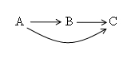

5. Dependència Funcional Transitiva
La dependència funcional transitiva s'aplica per a analitzar les taules en tercera forma normal (3FN). Consisteix bàsicament a considerar que un atribut no primari només ha de conèixer-se a través de la clau principal o claus secundàries (atributs que, encara que no són claus principals, serveixen per identificar de manera única una fila en alguns contextos específics). En un altre cas, estarà produint redundància d'informació amb les anomalies típiques que porta amb ella.
En termes simples, aquesta dependència passa quan un atribut no clau (o no primari) depèn indirectament de la clau principal mitjançant un altre atribut.
Gràficament es pot mostrar:

Per tant, un atribut C és transitivament dependent d'un altre A si es coneix per diferents vies, una directament, i una altra a partir d'un altre atribut intermedi B.
Per exemple, considerem tres atributs que formen part de la taula ALUMNES:
- NUMMAT = núm. de matrícula.
- GRUP = Grup assignat.
- AULAGRUP = Aula assignada al grup.
NUMMAT →GRUP | AULAGRUP
GRUP →AULAGRUP
L'atribut AULAGRUP és transitivament dependent de NUMMAT, ja que es pot conèixer per mig de l'atribut NUMMAT i a través de l'atribut GRUP

Llicenciat sota la Llicència Creative Commons Reconeixement NoComercial SenseObraDerivada 3.0